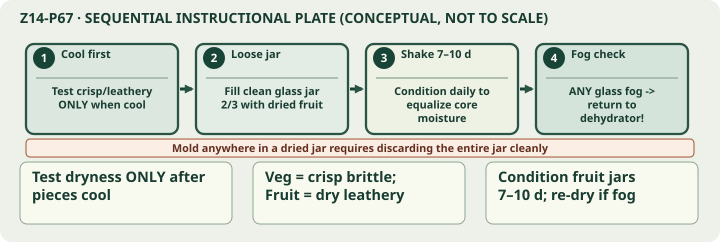

Z14-P67 · Food production and preservation · New manuscript
Pretreat and condition dried fruits and vegetables to prevent storage mold
Equalize residual hidden moisture across dried fruit pieces before airtight sealing so jars stay crisp and mold-free.
When it applies · Home-dehydrated apples, pears, berries, tomatoes, herbs, and blanched garden vegetables.
Equipment · Blanching kettle (for vegetables), ascorbic acid/lemon dip (for browning fruits), clean glass conditioning jars, and cool dark storage.

Actions
- Blanch most garden vegetables (carrots, peas, green beans, corn) per NCHFP drying tables before dehydrating so they rehydrate cleanly and resist stale off-flavors; dip light-fleshed fruits (apples, pears, peaches) briefly in ascorbic acid or lemon-juice solution if desired to reduce enzymatic browning.[P11]
- Test dryness properly AFTER pieces cool completely to room temperature (warm pieces feel deceptively softer than cool ones): vegetables should dry brittle/crisp snapping cleanly, while fruits dry leathery and pliable with ZERO visible moisture beads when cut and squeezed.[P11]
- CONDITION dried fruits for 7 to 10 days before long-term sealing: pack cooled fruit loosely (two-thirds full) in clean glass jars and shake daily—if ANY condensation fogs the glass walls, return fruit to the dehydrator immediately until zero fog appears![P11]
Failure recognition · Sealing warm freshly dried apple rings straight into vacuum-sealed jars where hidden core moisture fogs the glass and grows green mold within a week.[P11]
Verify · Confirm cool-piece dryness test passed, 7–10 day daily jar-shake conditioning completed for fruits, and zero glass condensation before final storage.[P11]
Stop or change course · Any visible mold fuzz on dried fruits or vegetables requires discarding the entire jar cleanly—never pick out "good pieces" from a moldy jar.[P11, P10]
Evidence and editorial notes
- P10 · NCHFP · Identifying and Handling Spoiled Canned Food (current web edition)
- Section: Identifying and Handling Spoiled Canned Food > Botulism Detoxification · Conditions: Suspected unsealed, bulging, spurting, foamy, moldy, or improperly processed home-canned jars
Support: Never taste suspect home-canned food—botulinum toxin is odorless and tasteless; check every seal before opening, discard unsealed jars promptly after processing (or refrigerate/reprocess within 24 hours per NCHFP rules), and follow official NCHFP detoxification/disposal steps for suspect low-acid jars.
Limitations: Simple visual clarity or normal smell never proves an untested low-acid jar is free of botulinum toxin. · Conflicting evidence: None; mandatory high-consequence food-safety stop condition.
Editorial note: Anchors spoilage inspection and safe disposal in Z14. · Specialist reviewer: Food microbiology and public health
Primary source · checked 2026-11-24 - P11 · NCHFP · Drying Foods Safely (current web edition)
- Section: Drying Foods > Pretreatment, Temperature Control, Airflow, and Conditioning · Conditions: Electric dehydrators, controlled low ovens, or approved solar dryers for fruits, herbs, vegetables, and jerky
Support: Control temperature, low humidity, and continuous airflow simultaneously to remove moisture before spoilage occurs; blanch vegetables where directed, heat meat to safe internal temperatures per NCHFP jerky guidelines, and condition dried fruits to equalize residual moisture before airtight storage.
Limitations: Case-hardening (too hot early) traps wet interiors that mold in storage; open-air outdoor drying fails in humid climates like Upper Midwest summers. · Conflicting evidence: None; separates safe controlled dehydration from high-risk raw-meat drying.
Editorial note: Grounds dehydration equipment, jerky safety, and moisture-equilibrium checks. · Specialist reviewer: Food preservation and food safety specialist
Primary source · checked 2026-11-24
Source lineage · NCHFP Drying Foods Safely; new manuscript · Classification · New manuscript.